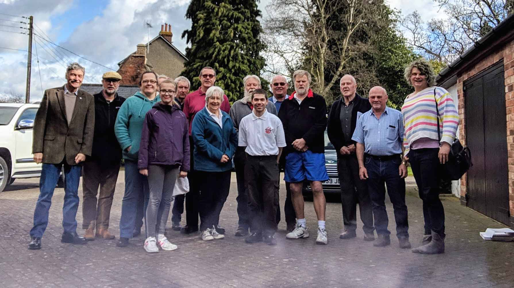

Good Turnout for AGM
(and John Oaker’s last as Secretary)
· 16th April 2019
This year’s Annual General Meeting was once again very well supported, with fifteen members crammed into the Boardroom of the Triumph Sports Six Club, Lubenham.
It was a historic meeting, as it would be the last one attended by John Oaker in his capacity as Club Secretary. For his service to the club, it was unanimously proposed that John should become an ‘Honorary Life Member’. After the meeting, John was presented with a picture and an engraved trophy, to mark his time with the club. We hope, John, that you will continue to join us at our AGMs from time to time, so we can all continue to learn from your vast experience.
The normal routine continued with officers’ reports being delivered. Thanks were given to Paul Burgess, for the excellent running of the Spares Department; also to Andi and Rob Davies for the website, and Barbara for ‘Flower Power’. Mark Smith has also had a very busy year as Media Secretary. Everyone agreed that thanks should also be given to those who work extremely hard ‘behind the scenes’, including Paul Norton (Treasurer), John Castle (Chairman) and of course, John Oaker. Russ Hoenig was also acknowledged for all he does to promote the club, on the ‘other side of the pond’.
Some exciting news is that two new officers have been appointed to the committee: John Banks, who has been a regular contributor to both the website and ‘Flower Power’, takes over as Rally Secretary, and John Corley (yes, another John!) has accepted the role of Secretary.
As far as Regalia is concerned, little has been sold over the past year, so if you wish to identify yourself with our splendid marque, have a look in the shop section of the website.
Future plans for the website were also discussed, both in terms of content and technical details, including ‘members only’ areas. A revamp is also coming shortly.
Membership fees were discussed, as well as a change to the dates of joining and renewal. The committee reached a unanimous decision that a twice-yearly joining date (end of March and end of September), would be introduced, and from 30th September 2019, fees would increase to £35.
All in all, it was an extremely positive meeting, with the club making all the right moves to ensure the continued survival of our beloved cars, plus the raising of awareness amongst the general public, of the Mayflower’s part in our motoring heritage.
If you wish to see the full minutes, they will be available in the latest edition of Flower Power (No. 164), which is due out shortly, and in due course, the full minutes will also be added to this site.
Happy Mayflowering in 2019!
Rob Davies
John Castle presenting John Oaker with special awards for his services to the club